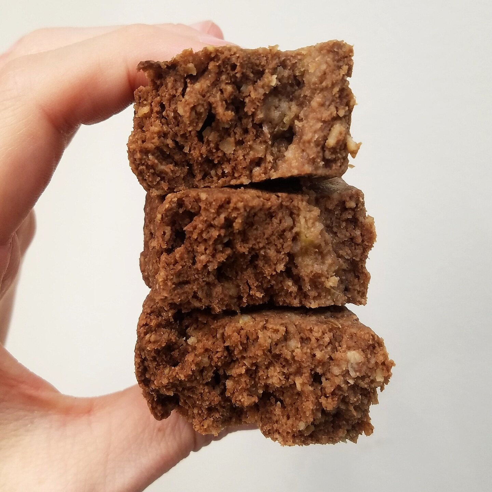

Chocolate Banana Bread (v, gf)

Alright. I've done the math and finally solved it. Banana bread consists of 1% banana, 99% perfection. Does anyone else go through banana bread phases? I'll bake 3-4 loaves back to back and smash it, then forget for months until the phase repeats and I fall in love over again. How can something so simple be so good?! This phase is chocolate banana bread. This simple recipe is vegan, gluten free, sugar free, and oil free. It is quick to make and doesn't leave you with a kitchen full of dishes. This chocolate banana bread is sweet, moist, and a healthy snack to have around!
I love the light, cakey texture of this specific banana bread. This is coming from the coconut flour in the recipe! I purchase this coconut flour; if you don't have coconut flour, you could use extra ground oats or another flour such as buckwheat or spelt. However, you will have to use less almond milk and the texture won't be as cakey. All good, nonetheless!
Banana bread pro tip: place your banana bread in the fridge to get cold before you eat it! I swear that banana bread is 50x better cold than room temp. What do you think!? Try out this vegan chocolate banana bread recipe for yourself and let me know what you think. :)
Chocolate Banana Bread (v, gf)
Makes: 10 slices
-
3 ripe bananas
-
1.5 cup oats, ground into a flour
-
1/2 cup coconut flour
-
1/4 cup cacao powder
-
1/4 cup baking stevia
-
1/2 TBSP baking powder
-
1 cup unsweetened almond milk
-
First, mash the ripe bananas. Add the ground oats, coconut flour, cacao powder, stevia, and baking powder. Mix well.
-
Slowly stir in the almond milk. If batter is too thick, slowly stir in more almond milk until a batter consistency is reached.
-
Spray a 4x9 loaf dish with nonstick spray and pour the batter in. Bake at 350F for 50 minutes.
-
Remove from the oven and let cool for 15 minutes.
-
Cut into 10 slices, and enjoy!